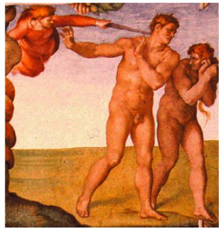

In general, optimizing motor performance is achieved through three classes of control:
Error-based learning is the key process in many well-studied ADAPTATION paradigms, including
A common feature across these different task domains:
(a) A simple redundant task in which a target has to be reached
with a stick using two effectors: shoulder and arm, whose rotations
together contribute to a combined outcome.
(b) Many combinations of the two rotations will on average produce
the correct solution. The locus of these is the solution
manifold; the error signal corresponds to deviations from it (blue double arrow).
In contrast to an error signal, reinforcement signals — which can be as simple as "success" or "failure" — do not give information about the required control change. Thus, the learner must explore the possibilities to gradually improve its motor commands. Like error-based learning, RL can also be used to guide learning towards the solution manifold. However, because the signal (the reward) provides less information than in error-based learning (the vector of errors), such learning tends to be SLOW.
Information obtained during a single movement is often too sparse or too noisy to unambiguously determine the source of the error. Therefore, it underspecifies the way in which the motor commands should be updated, resulting in an INVERSE PROBLEM (differences in control uniquely specify differences in outcome, but not vice versa).
To resolve this issue, the system uses models of the task: representations that reflect its ASSUMPTIONS about the task structure and that constrain error-driven learning. Such models can be mechanistic or normative.
Mechanistic models specify the representations and learning algorithms directly. In this framework, representations are often considered to be based on motor primitives (the neural building blocks out of which new motor memories are formed; cf. synergies illustrated in slides 9—11).
Normative models specify optimal ways for the learner to adapt when faced with errors. A normative model includes two key components:
Motor primitives can be thought of as neural control modules that can be
flexibly combined to generate a large repertoire of behaviors. For
example, a primitive might represent the temporal profile of a particular
muscle activity. The overall motor output will be
could be the sum of all
primitives, weighted by the level of the activation of each module. The
makeup of the population of such primitives then determines which
structural constraints are imposed on learning.
Several recent models have been developed to account for the reduction in interference in the presence of contextual cues. These models propose multiple, overlapping internal representations that can be selectively engaged by each movement context.
A general underlying principle of what can or cannot serve as a contextual switch is still elusive.
[Compare the Frame Problem that arises in connection with knowledge representation and truth maintenance.]
Motor control is HIERARCHICAL: some of the primitives (units) of action that it involves are very high-level.
The illustration shows the postural MOVEMENT SYNERGIES evoked by stimulating single neurons in monkey precentral gyrus (from Graziano et al., 2002).
The zombie ant phenomenon shows what happens when
motor/action
|  |
Defense postures in monkey, man, and woman (the painting is a detail from Michelangelo’s Fall and Expulsion from Eden).
Within the normative framework, the process of motor [or any other kind of] learning can be understood as a CREDIT ASSIGNMENT PROBLEM (see Marvin Minsky’ 1960 paper where it is first stated): how to attribute an error signal to the underlying CAUSES.
For example, if a tennis player starts hitting shots into the net on the serve, the problem could be that the ball was not thrown high enough, was hit too early, that the racquet strings are loose or that he or she is fatigued. If the racquet dynamics have changed, the player would do well to learn these dynamics and remember them for the next time that they use this particular racquet. Conversely, if the player is simply tired, the necessary adjustments should only be temporary but should be applied even if the racquet is changed at that moment.
Two types of credit assignment can be distinguished:
Like motor control, general decision making environments are characterized by:
Actions can move the decision-maker from one state to another and they can produce outcomes.
The outcomes are assumed to have numerical (positive or negative) utilities, which can change according to the motivational state of the decision-maker (e.g. food is less valuable to a satiated animal).
Typically, the decision-maker starts off not knowing the rules of the environment (the state transitions and outcomes brought about by the actions), and has to learn or sample these from experience.

|
|
| The 3-disk version of the Towers of Hanoi problem... | ...and its STATE SPACE. |
Model-free vs. model-based RL,
from Theoretical Impediments to Machine Learning With
Seven Sparks from the Causal Revolution (2018) by the great
Judea
Pearl:
In this example, a participant is tested in the two-armed bandit task.
(a) From the experimentalist's point of view (scientist
caricature), the world is characterized by a single state (\(S_0\)) and two
actions: left (blue, L) or right (red, R) button press. However, from the
participant's point of view there is an infinite repertoire of possible
world models characterized by different sets of states and actions.
(b) With respect to the action sets, she may assume that there is
only a single available action, pressing any button, regardless of its
location (purple, L/R).
(c) With respect to the state sets, the participant may assume that
the state is defined by her last action (\(S_L\) and \(S_R\), for previous
L and R action, respectively).
(d) Moreover, the participant may assume she is playing a
penny-matching game with another human.
(e) These and other possible assumptions may
lead to very different predictions in the framework of RL.
If the RL task involves a video game, humans have a leg up in the form of sophisticated priors / world knowledge.
In operant learning, experience (left trapezoid), composed of present and past observations, actions and rewards, is used to learn a "policy".
(a) Standard RL models typically assume that the learner (brain gray icon) has access to the relevant states and actions set (represented by a bluish world icon) before the learning of the policy. Alternative suggestions are that the state and action sets are learned from experience and from prior expectations (different world icons) before (b) or in parallel (c) to the learning of the policy. (d) Alternatively, the agent may directly learn without an explicit representation of states and actions, but rather by tuning a parametric policy (cog wheels icon), for example, using stochastic gradient methods on this policy’s parameters.
The best studied case is when RL can be formulated as a class of Markov Decision Problems (MDP).
The agent can visit a finite number of states \(S_i\). In visiting a state, it collects a numerical reward \(R_i\), where negative numbers may represent punishments. Each state has a changeable value \(V_i\) attached to it. From every state there are subsequent states that can be reached by means of actions \(A_{ij}\). The value \(V_i\) of a state \(S_i\) is defined by the averaged future reward \(\tilde{R}\) which can be accumulated by selecting actions from this particular state. Actions are selected according to a policy which can also change. The goal of an RL algorithm is to select actions that maximize the expected cumulative reward (the return) of the agent.
[For a useful introduction to RL, MDP, and the basic algorithms, see the Scholarpedia article.]

The old/standard view of agent-environment interaction in RL. Primary reward signals are supplied to the agent from a "critic" in its environment.
A refined view, in which the environment is divided into an internal and external environment, with all reward signals coming from the former. The shaded box corresponds to what we would think of as the "organism."
With this insight into the nature of the reward, the proper approach to RL is intrinsically motivated reinforcement learning.
(a) A schematic of action selection in the OPTIONS framework. At the first time-step, a primitive action, a1, is selected. At time-step two, an option, o1, is selected, and the policy of this option leads to selection of a primitive action, a2, followed by selection of another option, o2. The policy for o2, in turn, selects primitive actions a3 and a4. The options then terminate, and another primitive action, a5, is selected at the top-most level.
(b) Inset: the rooms domain (Sutton et al.), as implemented by Botvinick et al.
S, start; G, goal. Primitive actions include single-step moves in the eight cardinal directions. Options contain policies to reach each door. Arrows show a sample trajectory involving selection of two options (red and blue arrows) and three primitive actions (black). The plot shows the mean number of steps required to reach the goal over learning episodes with and without inclusion of the door options.
Looking for optimal task hierarchy:
"Arranging actions hierarchically has well established benefits, allowing behaviors to be represented efficiently by the brain, and allowing solutions to new tasks to be discovered easily. However, these payoffs depend on the particular way in which actions are organized into a hierarchy[...] We provide a mathematical account for what makes some hierarchies better than others, an account that allows an optimal hierarchy to be identified for any set of tasks. We then present results from four behavioral experiments, suggesting that human learners spontaneously discover optimal action hierarchies."
(B). Mean performance of three hierarchical reinforcement learning agents in the rooms task.
Inset: Results based on four graph decompositions. Blue: decomposition from panel C [previous slide]. Purple: decomposition from panel D. Black: entire graph treated as one region. Orange: decomposition with orange vertices in panel A segregated out as singleton regions.
Model evidence is on a log scale (data range \( -7.00 \times 10^4\) to \( -1.19 \times 10^5\)). Search time denotes the expected number of trial-and-error attempts to discover the solution to a randomly drawn task or subtask (geometric mean; range 685 to 65947; tick mark indicates the origin). Codelength signifies the number of bits required to encode the entire data-set under a Shannon code (range \(1.01\times 10^5\) to \(1.72\times 10^5\)). Note that the abscissa refers both to model evidence and codelength. Model evidence increases left to right, and codelength increases right to left.
"The optimal hierarchy is one that best facilitates adaptive behavior in the face of new problems. [...] This notion can be made precise using the framework of Bayesian model selection. [...] The agent is assumed to occupy a world in which it will be faced with a specific set of tasks in an unpredictable order, and the objective is to find a hierarchical representation that will beget the best performance on average across this set of tasks. An important aspect of this scenario is that the agent may reuse subtask policies across tasks (as well as task policies if tasks recur)."
In Bayesian model selection, each candidate model is assumed to be associated with a set of parameters \(\theta\), and the fit between the model and the target data is quantified by the marginal likelihood or model evidence: $$ P\left(data\mid model\right)=\sum_{\theta\in\Theta} P\left(data\mid model,\theta\right) P\left(\theta\mid model\right) $$ where \(\Theta\) is the set of feasible model parameterizations (in the above formula, the likelihood is called "marginal" because it is marginalized over all possible choices of \(\theta\)).
In the present setting, where the models in question are different possible hierarchies, and the data are a set of target behaviors, the model evidence becomes: $$ P\left(behavior\mid hierarchy\right)=\sum_{\pi\in\Pi} P\left(behavior\mid hierarchy,\pi\right) P\left(\pi\mid hierarchy\right) $$ where \(\Pi\) is the set of behavioral policies \(\pi\) available to the candidate agent, given its inventory of subtask representations (this includes the root policy for each task in the target ensemble, as well as the policy for each subtask itself).
(C). Optimal decomposition. (D). An alternative decomposition.
(B). Task display from Experiment 1. A group of forty participants prepared to make a set of ‘‘deliveries’’ by learning the layout of a small town. The town comprised a set of ten locations, each associated with a distinctive visual icon. Participants were never given a bird’s eye view of the town. Instead, during an initial training period, participants were drilled on the adjacency relations among individual locations. Following this training period, participants were informed that they would next be asked to navigate through the town in order to make a series of deliveries between randomly selected locations, receiving a payment for each delivery that rewarded use of the fewest possible steps. Before making any deliveries, however, participants were asked to choose the position for a ‘‘bus stop’’ within the town. Instructions indicated that, during the subsequent deliveries, participants would be able to ‘‘take a ride’’ to the bus stop’s location from anywhere in the town, potentially saving steps and thereby increasing payments. Participants were asked to identify three locations as their first-, second- and third-choice bus stop sites.
(C). Graph employed in Experiment 1, showing the optimal decomposition. Width of each gray ring indicates mean proportion of cases in which the relevant bus stop location was chosen.
(F). State-transition graph for the Tower of Hanoi puzzle, showing the optimal decomposition and indicating the start and goal configurations of the kind studied in Experiment 4.
Last modified: Thu Mar 10 2022 at 09:03:42 EST